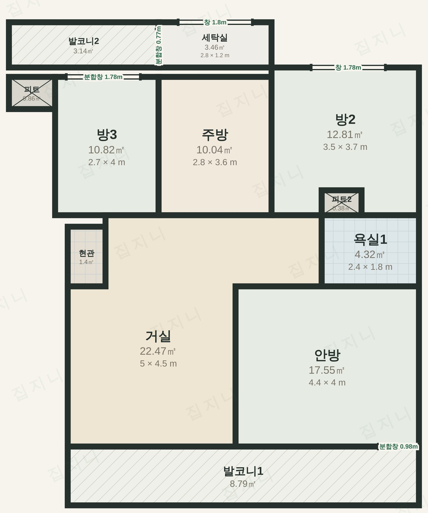
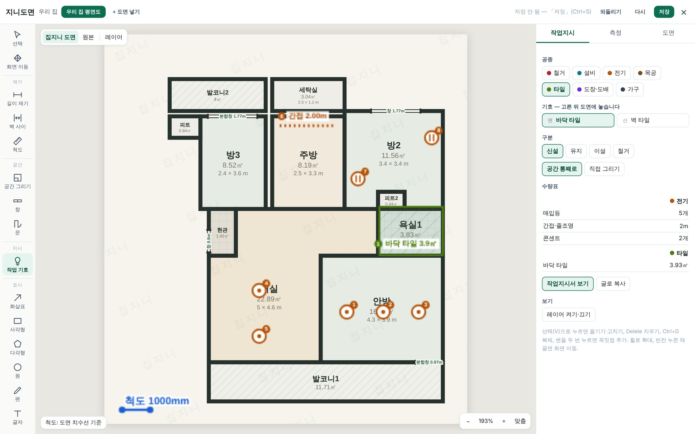
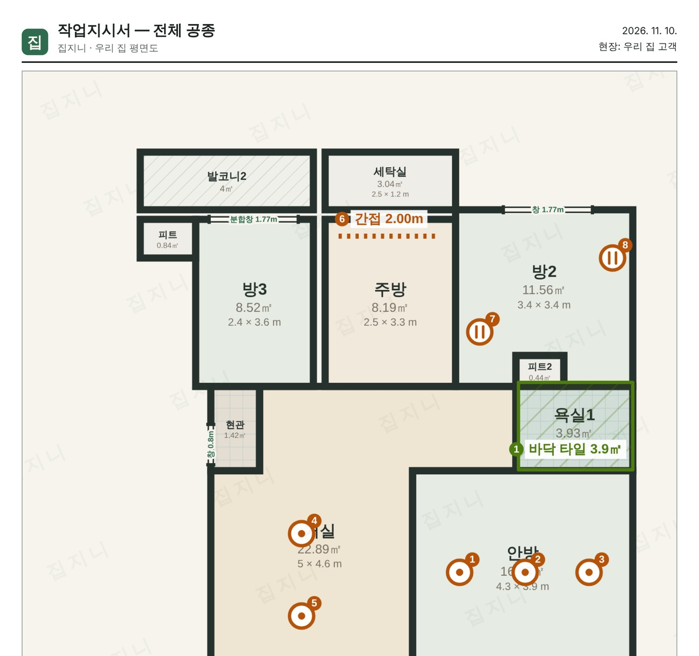
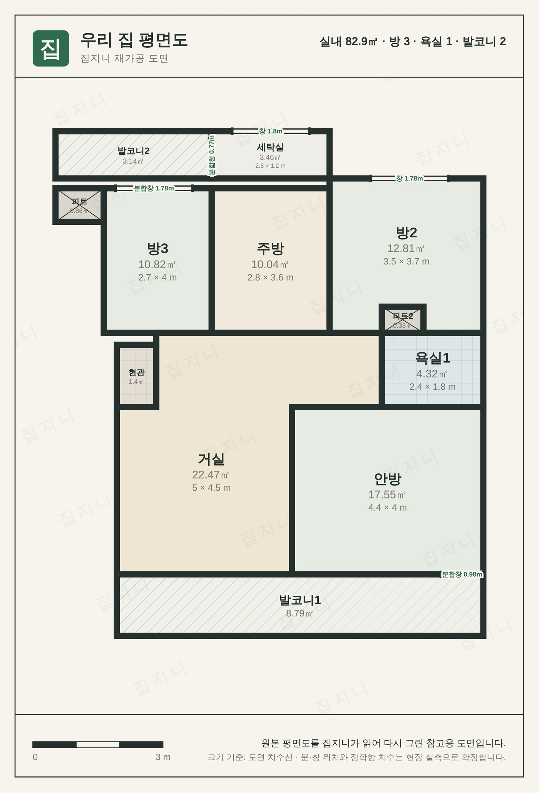

중간 마진 없이 집을 고치는 방법과,
그 과정을 처음부터 끝까지 보여 드리는 도구들

제 집을 지을 때 현장에서 들은 말입니다. 돈은 제가 내는데 눈치는 제가 봤습니다. 무엇이 빠지고 무엇이 바뀌는지 알 방법이 없었기 때문입니다.
인테리어도 다르지 않았습니다. 견적서에는 「타일 공사 일식」 한 줄과 금액만 있고, 어떤 타일을 몇 장 쓰는지, 그중 얼마가 자재값이고 얼마가 업체 몫인지는 적혀 있지 않습니다. 공사가 시작되면 현장에서 무슨 일이 벌어지는지 전화로 물어볼 수밖에 없습니다.
집지니는 이 두 가지를 바꾸려고 만들었습니다. 하나는 돈입니다. 자재비는 자재상에게, 인건비는 기술자에게 고객이 직접 내고, 저희는 미리 정해 둔 운영비만 받습니다. 다른 하나는 과정입니다. 견적, 도면, 작업 지시, 일정, 주문 내역을 고객이 직접 열어 볼 수 있게 했습니다.
이 안내서는 그 방법과, 그러려고 저희가 직접 만든 도구들을 소개합니다. 과장 없이 적으려고 했습니다. 읽어 보시고 맞지 않으면 다른 길을 고르셔도 좋습니다. 도배만 하시거나 장판만 바꾸신다면 기술자에게 직접 맡기시는 편이 더 쌉니다. 그런 의뢰는 저희가 먼저 그렇게 말씀드립니다.
집지니 대표 드림
한 업체에 전부 맡기면 편합니다. 대신 돈이 업체를 한 번 거칩니다. 업체는 자재상과 기술자에게 줄 돈에 자기 몫을 얹어 견적을 내고, 그 몫이 얼마인지는 견적서에 드러나지 않습니다.
32평 아파트 전체 수리를 예로 들면 대략 이렇습니다.
흔한 수준을 예로 든 금액입니다. 실제 금액은 현장과 자재에 따라 달라집니다.
고객이 자재상과 기술자에게 직접 냅니다. 영수증도 고객 이름으로 나옵니다. 집지니는 그 옆에서 사람을 연결하고 순서와 일정을 맞추며, 운영비는 따로 받습니다. 운영비 표는 8쪽에 있고 그것이 저희가 받는 돈의 전부입니다.
현장 관리자를 함께 쓰시면 맡겨 두신 대금을 공정이 끝난 것을 확인한 뒤 대신 지급해 드립니다. 이때도 얹는 돈은 없습니다.
어느 쪽이 무조건 낫다고 말씀드리지 않겠습니다. 시간이 없고 비용이 덜 중요하면 통째로 맡기시는 편이, 시간이 넉넉하고 현장을 아시면 혼자 하시는 편이 맞습니다. 집지니는 그 사이입니다.
| 통째로 맡기기 | 혼자 다 하기 | 집지니 | |
|---|---|---|---|
| 하는 방식 | 업체가 전부 | 내가 전부 | 연결과 관리만 맡김 |
| 32평 비용 (예) | 약 6,500만 원 | 약 3,500만 원 | 약 4,000만 원대 |
| 내가 쓰는 시간 | 거의 없음 | 200시간 넘게 | 20~30시간 |
| 업체 몫 | 30~50% | 없음 | 없음 (운영비만) |
| 단가 | 묶음 금액 | 직접 알아봄 | 모델명·단가·거래처 공개 |
| 작업 지시 | 업체 안에서 | 말과 사진으로 | 도면 기호와 작업지시서 |
| 진행 확인 | 전화로 물어봄 | 매일 현장에 | 휴대전화 화면에서 |
| 순서와 일정 | 업체가 | 내가 조율 | 코디가 공정표로 |
| 하자 | 업체마다 다름 | 기술자와 직접 | 12개월 동안 조율 |
비용과 시간은 흔한 수준을 예로 든 것입니다.
공정이 세 가지 이상 얽힌 공사부터 받습니다. 공정 사이의 순서와 자재, 사람을 맞추는 일이 생겨야 코디의 쓸모가 있기 때문입니다.
시공은 기술자가, 자재는 자재상이 책임집니다. 집지니는 연결한 사람의 품질과 일정을 책임집니다. 역할을 섞지 않습니다.
어림 견적이 나중에 불어나는 까닭은 대개 처음에 묻지 않아서입니다. 평수만 듣고 낸 금액은 철거해 보니 다르고, 자재를 고르니 다릅니다. 그래서 집지니는 의뢰서를 길게 받습니다. 10분쯤 걸립니다.
주소를 주시면 단지 이름, 전용면적, 준공 연도를 공공 자료에서 확인해 견적에 반영합니다.
사진이나 파일로 올리시면 도면 작업으로 바로 이어집니다. 없으면 코디가 찾아봅니다.
철거부터 도배까지, 새로 할 것과 그대로 둘 것을 항목으로 고르십니다. 작성 전에 재어 둘 것과 찍어 둘 것은 사전 준비표로 알려 드립니다.
「타일 일식」이 아니라 어떤 자재를 몇 장, 한 장에 얼마, 어느 거래처에서 사는지까지 적습니다. 다른 견적서와 줄 단위로 견주실 수 있습니다.
더 정확한 금액이 필요하시면 코디가 현장에 가서 직접 재고 집 상태를 점검합니다. 자재는 서울 강서구 가양동 샘플실에서 벽지, 장판, 마루, 타일, 문 견본을 직접 보실 수 있습니다.
공사 도면이 따로 있는 집은 드뭅니다. 대부분 부동산 화면의 평면도나 분양 책자 한 장이 전부입니다. 집지니는 그 그림을 넣으면 방 이름과 치수 글자, 벽을 읽어 방을 나누고, 방마다 넓이와 가로·세로를 계산해 한 가지 양식의 도면으로 다시 그립니다.
읽은 결과는 초안입니다. 틀린 곳은 코디가 눌러서 고치고, 자재 주문에 쓰는 치수는 현장에서 다시 잽니다. 평면도 그림을 읽는 일은 화면을 연 기기 안에서 이루어지며, 그림을 다른 회사로 보내 분석하지 않습니다.

그림 1. 집지니 도면 화면. 다시 그린 도면 위에 작업 기호를 놓으면 오른쪽 수량표가 따라서 세어집니다. 예시 도면은 부동산 평면도 한 장에서 만든 것입니다.
| 크기를 잡는 순서 | 도면에 적힌 치수선 → 방마다 적힌 면적 → 전용면적 |
| 구분해서 그리는 것 | 방, 거실·주방, 욕실, 발코니, 현관, 설비 통로, 창 |
| 고치는 방법 | 방 옮기기, 꼭짓점 고치기, 길이와 벽 사이 거리 재기, 되돌리기 |
| 넣을 수 있는 것 | 화면을 갈무리한 그림, 휴대전화로 찍은 사진, 설계 도면 문서 파일 |
공사에서 생기는 다툼은 솜씨보다 전달에서 더 자주 나옵니다. 「콘센트는 침대 옆에 두 개」라고 말하면 기술자마다 다른 자리에 답니다.
집지니는 도면 위에 기호로 찍습니다. 기호마다 번호가 붙고, 새로 다는 것인지 옮기는 것인지 떼어 내는 것인지가 표시됩니다. 개수와 길이, 면적은 표로 모입니다.
지시서는 공종별로 따로 나갑니다. 전기 기술자는 전기 지시서만 받습니다. 종이로 뽑을 수도 있고, 휴대전화 주소로 보내면 기술자가 열어 보고 끝낸 항목을 눌러 표시합니다. 그 표시는 코디 화면에 바로 보입니다.
| 공종 | 철거, 설비, 전기, 목공, 타일, 도장·도배, 가구 |
| 기호 | 서른네 가지 (등, 콘센트, 스위치, 타일 범위, 몰딩, 철거 구역 등) |
| 구분 | 신설, 유지, 이설, 철거 |
| 내보내기 | 인쇄, 그림, 글 |

그림 2. 작업지시서. 도면 위 번호와 수량표가 서로 맞물립니다.
이 도면 도구는 누구나 쓰실 수 있게 무료로 열어 두었습니다. 혼자 공사를 진행하시는 분도 평면도를 올려 작업지시서를 만들 수 있습니다. 가입은 필요 없고, 올린 도면은 쓰시는 기기 안에만 저장됩니다.
계약하시면 「우리 집 공사 한눈에」라는 고객 전용 화면이 열립니다. 휴대전화로 보실 수 있습니다.
| 진행 현황 | 지금 어느 공정이고 다음은 무엇인지 |
| 우리 집 도면 | 다시 그린 도면과 방별 넓이 |
| 공정표 | 날짜별 작업과 순서 |
| 견적서·발주서 | 자재, 단가, 주문한 내역 |
| 계약 | 공사 내용·기간·금액 확인과 화면 서명 |
| 결제 | 안내받은 금액을 안전결제로 |
코디 쪽에서는 의뢰, 견적, 계약, 시공, 사후 관리가 한 화면에 이어져 있습니다. 공정표와 자재 주문, 기술자 배정, 임금 대장, 현장별로 들어간 돈, 하자 접수가 같은 곳에 기록됩니다.
기록이 남으면 문제가 생겼을 때 기억이 아니라 기록으로 이야기할 수 있습니다. 누가 언제 무엇을 지시했는지, 어떤 자재를 얼마에 주문했는지가 남습니다.

그림 3. 고객 화면에 올라가는 도면. 방마다 넓이와 가로·세로가 적힙니다.
자재비와 인건비에는 얹지 않습니다. 시공 총액에 따라 아래 운영비를 받습니다.
| 시공 총액 | 코디 운영비 |
|---|---|
| 500만 원 이하 | 15% (최소 75만 원) |
| 500만 ~ 1,000만 원 | 11% |
| 1,000만 ~ 2,000만 원 | 8.5% |
| 2,000만 ~ 3,000만 원 | 7% |
| 3,000만 ~ 4,000만 원 | 6% |
| 4,000만 ~ 5,000만 원 | 5% |
| 5,000만 ~ 7,000만 원 | 4.5% |
| 7,000만 ~ 1억 원 | 4% |
| 1억 원 이상 | 3.5% |
공사 기간 동안 현장을 대신 챙기고 대금 지급을 대행합니다. 비용은 시공 총액에 따라 80만 원에서 700만 원 사이에서 따로 정합니다. 작은 공사는 현장 관리자 없이도 진행합니다.
입주 뒤 12개월 동안 하자를 접수하고 해당 기술자·자재상과 조율합니다.
| 단계 | 하는 일 | 비용 | |
|---|---|---|---|
| 1 | 방식 비교 | 세 가지 길 가운데 맞는 방식을 고릅니다 | |
| 2 | 의뢰서 작성 | 주소, 범위, 일정을 적고 평면도를 올립니다 | 무료 |
| 3 | 담당 코디 검토 | 현장 조건과 건물 정보를 확인합니다 | 무료 |
| 4 | 상세 견적서 | 자재 모델명, 단가, 거래처를 적어 보냅니다 | 무료 |
| 5 | 검토와 결정 | 마음에 들지 않으면 여기서 끝내셔도 됩니다 | |
| 6 | 계약 | 화면에서 서명하고 운영비를 결제합니다 | 운영비 |
| 7 | 도면과 작업지시서 | 기호로 위치와 수량을 확정합니다 | |
| 8 | 자재상·기술자 연결 | 거래처를 정하고 단가를 미리 협의합니다 | |
| 9 | 자재 주문 | 고객 이름으로 직접 거래합니다 | 자재비 |
| 10 | 시공 | 공정표대로 진행하고 고객 화면에 올립니다 | 인건비 |
| 11 | 입주와 하자 조율 | 점검 뒤 입주, 이후 12개월 동안 접수와 조율 |
카카오톡과 전화로 진행합니다. 평면도와 사진을 보내 주시면 더 정확해집니다. 고객께 보내는 안내는 담당 코디가 확인한 뒤 낮 시간에 보냅니다.
서울, 경기, 인천 수도권 전역에서 진행합니다.
집지니 · 사업자등록번호 874-10-00088 · 인천광역시 강화군 동문로 33 · thecloudstay@gmail.com
이 안내서의 비용 예시는 이해를 돕기 위한 것이며 실제 금액은 현장 조건에 따라 달라집니다. 모든 금액은 부가세 10% 별도입니다.